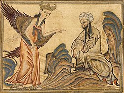
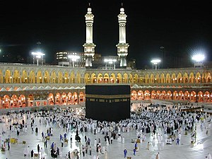
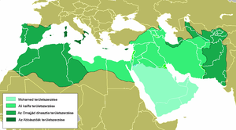

Mohamed
A próféta életét számtalan legenda övezi, mégis ismertek valódi történelmi tények is a mekkai férfi származásáról, életéről és küldetéséről. Aligha akad még valaki, aki ilyen rövid idő alatt olyan sok mindent megmozgatott, mint a mekkai kereskedő, és aki minden addig fennálló dolgot alapjaiban felforgatott.

A Korán
A Korán az iszlám elsődleges forrása és szent irata, az iszlám tantételei szerint Isten Mohamed prófétán keresztül kinyilatkoztatott szava, mely öröktől való.
Az iszlám vallás
Az iszlám az ősi arab, zsidó és keresztény hittel közös tőről fakadó monoteista vallás, amelyben Mohamed prófétáé a vallási és politikai vezető szerep. Hívőit muszlimoknak, magyarul gyakran muzulmánoknak nevezzük.

Az iszlám elterjedése
Az iszlám története a 7. században az Arab-félszigeten kifejlődött, és onnan robbanásszerűen terjeszkedő monoteista vallás története, amely úgy történelemformáló erejénél fogva, mint hatásaiban ma is százmilliók mindennapi életét és kultúráját határozza meg.
